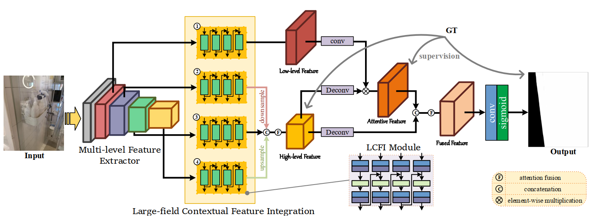
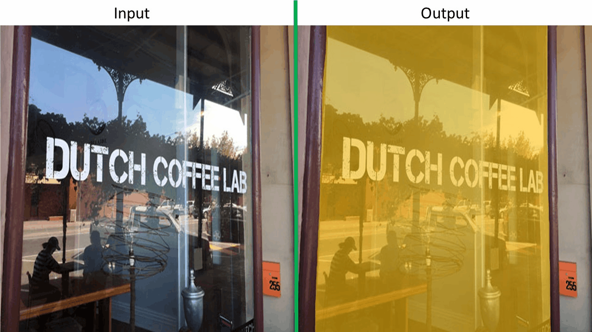

Don't Hit Me! Glass Detection in Real-world Scenes
Haiyang Mei1
Xin Yang1,4,*
Yang Wang1
Yuanyuan Liu1
Shengfeng He2
1
Dalian University of Technology
2
South China University of Technology
|
Abstract
Glass is very common in our daily life. Existing computer vision systems neglect the glass and thus might lead to severe consequence, e.g., the robot might crash into the glass wall. However, sensing the presence of the glass is not straightforward. The key challenge is that arbitrary objects/scenes can appear behind the glass and the content presented in the glass region typically similar to those outside of it. In this paper, we raise an interesting but important problem of detecting glass from a single RGB image. To address this problem, we construct a large-scale glass detection dataset (GDD) and design a glass detection network, called GDNet, by learning abundant contextual features from a global perspective with a novel large-field contextual feature integration module. Extensive experiments demonstrate the proposed method achieves superior glass detection results on our GDD test set. Particularly, we outperform state-of-the-art methods that fine-tuned for glass detection.
GDNet
|  |
Visual Results
|  |
Downloads
| Paper | : [ GDNet.pdf ] |
| Experimental results | : [ Results.zip ] |
| Pre-trained model. | : [ GDNet.pth ] |
| Source Code. | : [ Code ] |
Dataset
BibTex